Sammanställning av Modellflygets dag 2026
2026 markerade starten för försöket att skapa en nationell temadag för modellflyget. Även om det började försiktigt, med 12 av cirka 170 klubbar, tog dessa eldsjälar första steget:
- Gästrikland - MFK Looping
- Halland - Hökaklubben
- Jämtland - Östersunds Modellflygklubb
- Skåne - Trelleborgs Modellflygklubb
- Skåne - Eslövs Modellflygklubb
- Skåne - Ringsjöbygdens Modellflygklubb
- Skåne - RFK Gripen
- Skåne - MFK Snobben
- Skåne - MK Tre Aviatörer i Kivik
- Småland - MFK Apollo
- Sörmland - Södertälje Modellflygklubb
- Västergötland - Slättlanda Modellflygklubb
Andra som stöttade initiativet och hjälpte till att sprida information.
- Svenska Modellflygförbundet (SMFF) - Förbundet stöttar lokala klubbar och främjar intresset för radiostyrt modellflyg.
- Allt om Hobby - Sveriges ledande magasin för modellbygge och teknisk hobby.
- Modellvänner - Gratis nättidning i pdf-format med fokus på modellflyg.
Ett stort tack till alla som hjälpte till och gjorde dagen möjlig!
Här nedan delar några av klubbarna med sig av sina erfarenheter från Modellflygets dag. Läs om besökare, prova-på-flygningar, gemenskap och hur dagen blev runt om i landet.
Skåne - Eslövs Modellflygklubb & Ringsjöbygdens Modellflygklubb
Eslövs Modellflygklubb arrangerade Modellflygets dag tillsammans med grannklubben Ringsjöbygdens Modellflygklubb.
Inför dagen marknadsfördes evenemanget både mot allmänheten och modellflygare genom sociala medier och lokala grupper. Redan innan själva dagen gav satsningen resultat i form av två nya medlemmar.
Intresset för Modellflygets dag överträffade våra förväntningar. Under dagen besöktes fältet av uppskattningsvis 40 nyfikna besökare som ville se, uppleva och lära sig mer om modellflyg. Dessutom kom minst 15 modellflygare från andra klubbar för att delta i gemenskapen och aktiviteterna.
Vädret bjöd på kraftig vind, men det hindrade varken flygning eller prova-på-verksamhet. Besökarna fick se modeller i luften och ett tiotal personer fick själva prova att flyga med dubbelkommando. Trots de utmanande förhållandena gick det över förväntan och intresset var stort.
Dagen resulterade i ytterligare två nya medlemmar och sju personer som vill komma tillbaka för att prova igen. För oss blev det ett tydligt bevis på att Modellflygets dag är ett utmärkt sätt att både nå nya besökare, rekrytera medlemmar och skapa kontakt mellan klubbar.
Vi hoppas att ännu fler klubbar väljer att delta nästa år så att ännu fler får möjlighet att upptäcka modellflygets fantastiska hobby.
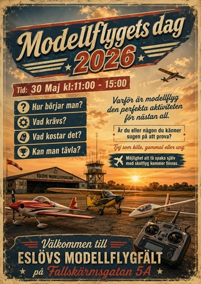
Evenemangsbild
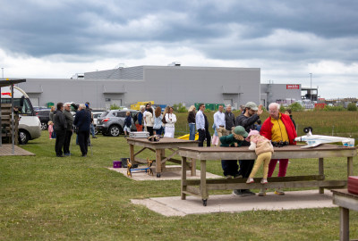
Genomgång och mingel inför prova-på-flygning med dubbelkommando
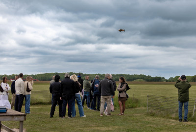
Flyguppvisning där klubbens piloter visade upp olika typer av modeller
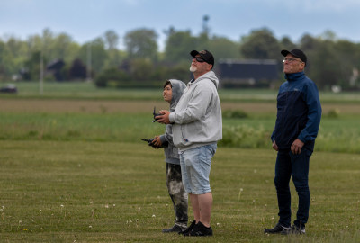
Flera ungdomar testade att spaka själva under trygg handledning med dubbelkommando
Vill du ser mer ? Här är en länk med trevligt material från en besökare, Johnny: Facebook inlägg
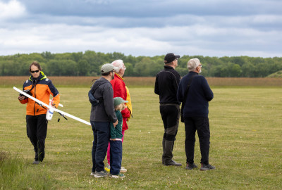
Det är aldrig för sent att börja – flera vuxna provade att flyga med dubbelkommando för första gången
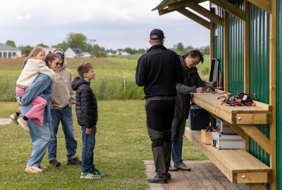
Det gav mersmak! Flera besökare vill prova igen och några har redan visat intresse för att bli medlemmar
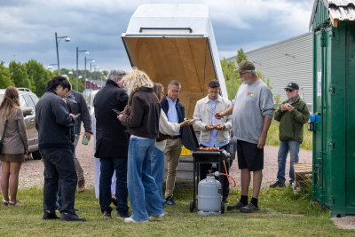
Modellflyg handlar inte bara om flygning – gemenskapen runt grillen är minst lika viktig
Hemsidan: https://eslovsmfk.se
Facebook sida: https://www.facebook.com/EslovsMFK
Facebook grupp: https://www.facebook.com/groups/rcflygieslov
Västergötland - Slättlanda Modellflygklubb
Vi hade en trevlig dag utan incidenter och med ett trettiotal intresserade personer från ett ganska stort område. Några hade hittat oss via Facebook, andra hade hört radioreklamen.
Dagen började soligt, men snart kom molnen. Det regnade lätt under större delen av dagen, men inte mer än att vi kunde flyga.
Några klubbar i närområdet får snart besök av blivande modellflygare. I vår klubb tror vi att vi får igång en eller två som varit mindre aktiva de senaste åren, och eventuellt även någon nybörjare.
Vi flög, pratade flyg och erbjöd dubbelkommandoflygning. Vi kommer att göra det här igen!
Vår kommun stöttade oss med bidrag till marknadsföring och information samt ett extra batteri till skolplanet. Vi marknadsförde dagen via hemsidan, Facebook-grupper, kommunens aktivitetskalender, inbjudningar till grannarna via Rydabladet (240 hushåll) och reklam i Radio Treby (närradio).
Vi tryckte även upp ett informationsblad om hur man börjar med modellflyg. Där fanns tips för nybörjare, exempel på nybörjarpaket och länkar till bra hemsidor.
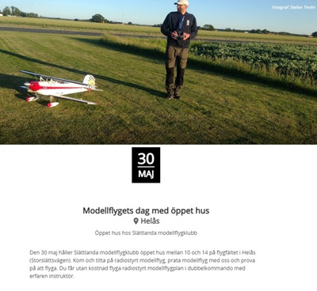
Evenemangsbild
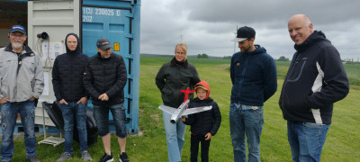
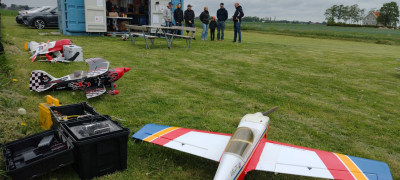
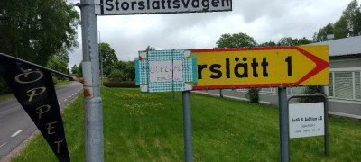
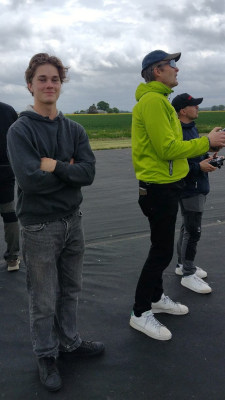
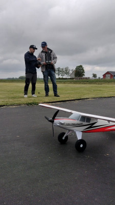
Hemsidan: https://www.slattlandamfk.com/
Facebook grupp: https://www.facebook.com/profile.php?id=100053165246312
Skåne - RFK Gripen
Trots kraftig blåst och utmanande väderförhållanden lockade Modellflygets dag många nyfikna besökare till fältet. Besökarna fick se modellflyg i luften under hela dagen, prata med piloterna och njuta av nygrillade hamburgare.
Dagen blev en positiv upplevelse för både klubbmedlemmar och besökare. En ny medlem anslöt sig direkt, och flera personer fick inspiration att själva börja flyga modellflyg.
Klubben riktar ett stort tack till alla som hjälpte till att genomföra dagen och till alla besökare som trotsade blåsten och kom förbi. Erfarenheterna från årets arrangemang var så positiva att klubben redan nu ser fram emot att vara med och arrangera Modellflygets dag även nästa år.
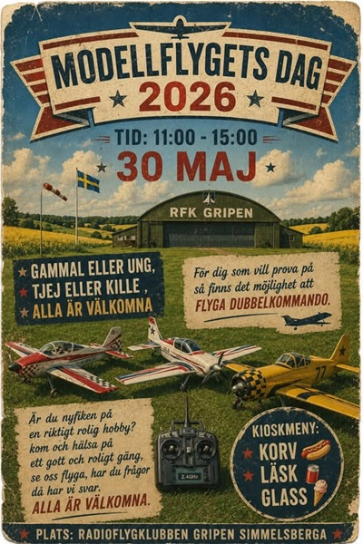
Evenemangsbild
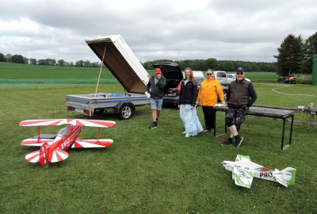
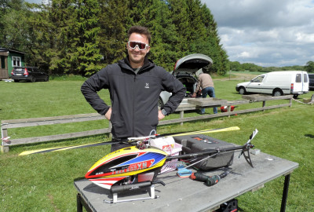
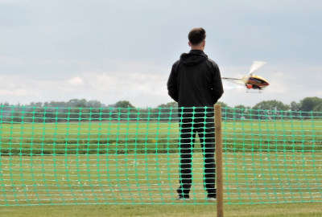
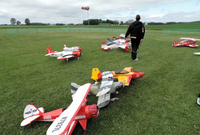
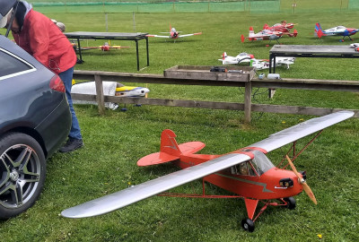
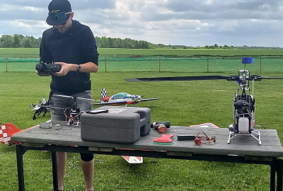
Facebook grupp: https://www.facebook.com/groups/222627294447260
Jämtland - Östersunds Modellflygklubb
Årets första klubbträff i samband med Modellflygets dag blev mycket lyckad, trots regn och stundtals ruskigt väder.
Mellan regnskurarna var det full aktivitet på fältet med många flygningar och en härlig blandning av olika flygplansmodeller, vilket uppskattades av både piloter och besökare. Vi hade till och med en tapper pilot som trotsade vädret och fortsatte flyga med hjälp av en personlig paraplyhållare!
Dagen bjöd på många trevliga möten och inspirerande samtal, och vi är extra glada över att kunna hälsa en ny medlem välkommen till klubben.
Ett stort tack till alla deltagare, funktionärer och besökare som trotsade vädret och bidrog till en riktigt trevlig dag på fältet!
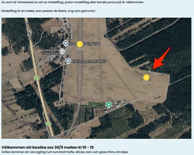
Evenemangsbild
Fotograf: Stig Martinsen
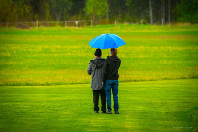
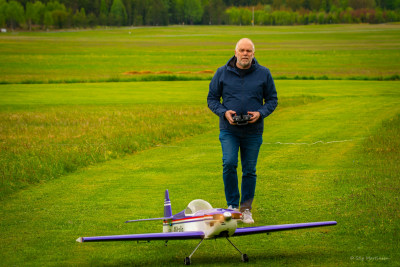
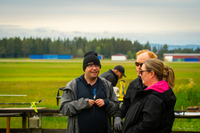
Hemsidan: https://ostersundsmodellflygklubb.se/
Facebook sida: https://www.facebook.com/omfk.nu
Småland - MFK Apollo
Vädret bjöd på både sol och friska vindar, men det hindrade inte besökarna från att uppskatta dagen.
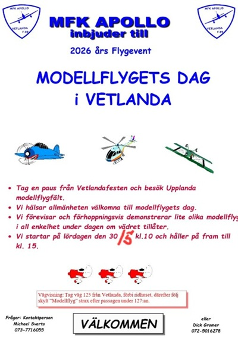
Evenemangsbild
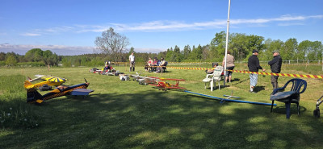
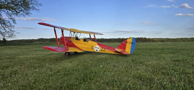
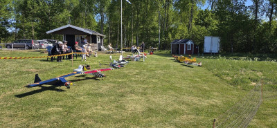
Skåne - Trelleborgs Modellflygklubb
Även vi deltog i den gemensamma satsningen Modellflygets dag. Trots blåsigt väder blev det en mycket trevlig dag.
Ett stort tack till alla besökare och till alla som hjälpte till att göra dagen möjlig.
Här nedan följer några bilder från dagen, tagna av vår duktige fotograf Stefan Nilsson.
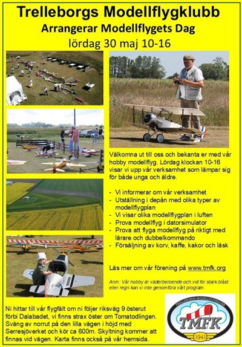
Evenemangsbild
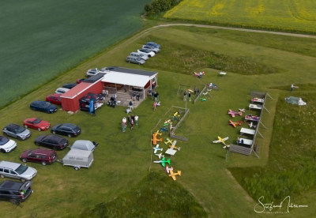
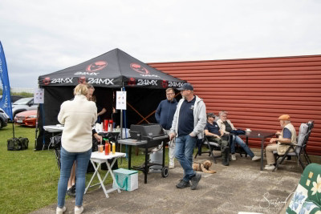
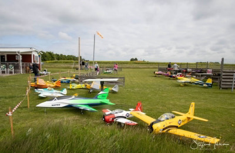
Hemsidan: https://www.tmfk.org/
Facebook grupp: https://www.facebook.com/groups/1140852026838946